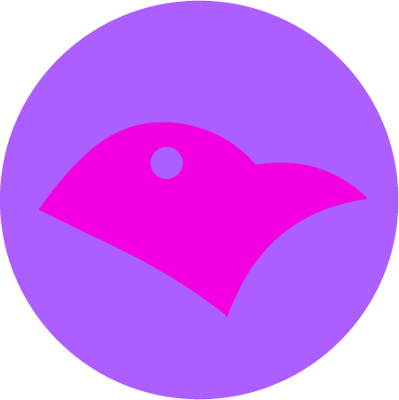
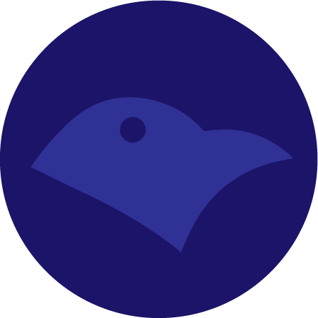

I build production systems end-to-end — from REST/microservices backends to Angular/React frontends — across enterprise consulting engagements and independent products. Currently exploring Claude-assisted engineering workflows on top of that foundation.
I'm a Fullstack Software Engineer based in Naples, Italy. I work across the entire stack — Java Spring Boot on the backend, Angular and React on the frontend — and I care about shipping things that actually run in production, not just demos.
I've contributed to enterprise platforms used across the EU (insurance, public administration, defense healthcare records), and outside of that I build and ship independent products end-to-end: real-time systems, multi-layer auth, payments, and AI integrations.
More recently, I've been formalizing how I use Claude and the Anthropic ecosystem (Claude Code, MCP, agent skills, subagents) as part of my day-to-day engineering workflow — treating AI-assisted development as a skill to build deliberately, not just a tool to dabble with.
Personal Ubuntu Server homelab — hands-on Linux admin, not professional-level
Certified through Anthropic Academy: Claude Code 101, Introduction to Model Context Protocol, Introduction to Agent Skills, Introduction to Subagents, and AI Fluency: Framework & Foundations. I use Claude Code as part of my real development workflow, not just for prototyping.

A WhatsApp Web-inspired messaging system built as 5 Spring Boot 3 microservices: API gateway (WebFlux), file service, notification service, and a call service with WebRTC support. Identity via a custom-themed Keycloak realm with Google login, messaging over RabbitMQ/STOMP, file storage on Cloudflare R2, and a full observability stack (Prometheus, Grafana, Loki, Tempo). Includes "Arno," a Gemini-powered chatbot, and an Angular 19 client generated from the OpenAPI spec.

A fullstack platform for real-time crypto trading: live price charts via CoinGecko, wallet-based buy/sell, portfolio tracking with per-asset profit/loss, watchlist, and order history. Auth with stateless JWT in an HttpOnly cookie, optional email OTP 2FA, and Cloudflare Turnstile. Stripe payments (test mode on the public demo) and a Gemini AI chatbot for market Q&A. The backend is being split from a monolith into independent Spring Boot services behind a gateway that handles JWT validation, rate limiting, and request size caps; deployed via GitHub Actions to a self-hosted server behind a Cloudflare Tunnel.
A complete REST API for an e-commerce platform: product and category management, dynamic cart logic, order processing, and user management. JPA domain model with proper relationships (OneToMany, ManyToMany), input validation, and a fully dockerized dev environment.
A textbook Spring Cloud microservices setup — config server, discovery server, gateway, feedback and notification services — paired with an Angular frontend and a self-managed Keycloak realm for identity, built to explore microservices architecture end-to-end.
I'm open to fullstack or backend roles at product, SaaS, or consulting companies. If you're looking for someone who ships end-to-end and cares about production quality — let's talk.